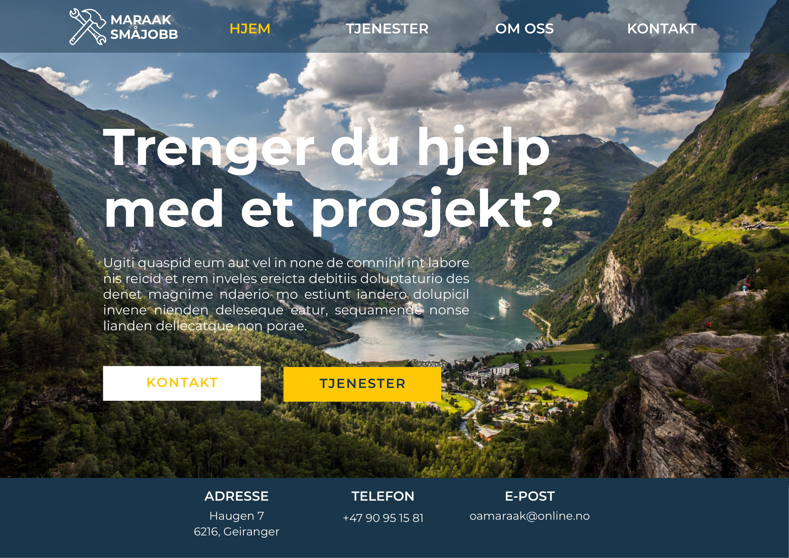

Øyvind Maraak
Lars Fredrik Petrusson
Joakim Martinsen
August Sandal Rolfsen
Dato: 21.09.2018
Klienten vår er Maraak Småjobb som er et enkeltmannsforetak drevet av Øystein Arne Maraak. Driften fåregår i indre Sunnmøre.
For nettsiden har vi har delt inn hensikten og målet inn i tre deler:
Det vil være naturlig at nettsiden skal gi en oversiktlig og lett forståelse av hva bedriften tilbyr og kan bistå med. Vi har sett for oss at vi skal ha en “clean” og enkel fremside, med enkel meny/navigering.
Vi ønsker å bedre brandingen gjennom inbound marketing. Dette vil vi oppnå gjennom bruk av gode og relevante nøkkelord i artikler og på siden generelt, slik at potensielle kunder lettere kan finne frem til nettsiden. Det blir derfor et fokus på Search Engine Optimization (SEO) eller søkemotoroptimalisering som det heter på norsk. Dette er da en metode som skal føre til at nettsiden oppnår bedre synlighet eller “ranking” blant søkemotorer. Et eksempel på hvordan vi kan utføre dette er gjennom å inkludere en artikkel av tidligere prosjekter og knytte bedriften (gjennom nettsiden) til sitt lokale miljø i Geiranger.
Vi ønsker å oppnå enkel og god kommunikasjon mellom bedriften og kundene, gjennom et enkelt henvendelsessystem. Systemet har også som formål å gjøre det lettere for Maraak Småjobb å holde oversikt over alle henvendelsene.
Hovedkundegruppen til nettsiden vil være folk som trenger hjelp med diverse oppdrag i og utenfor husholdningen. Dette vil for eksempel være folk som trenger hjelp med ulike oppussningsoppdrag, snekkerarbeid, muring, osv. Målet vil være å gi et tilbud til personer som enten ikke har tid til å utføre oppgavene selv, eller som ikke innehar de de nødvendige ferdighetene. Ettersom Maraak Småjobb driver med småjobber som gjerne er knyttet til bolig og eiendom ser vi for oss at kundegruppen vil være etablerte personer som enten er middelaldrende eller som inngår i den eldre garde. Disse personene har gjerne noe manglende ferdigheter innen data og teknologi, og har derfor et behov for en enkel nettside med lett navigering. Vi ser også for oss at kundegruppen vil kreve mye god og relevant informasjon før de benytter seg av tjenestene Maraak Småjobb tilbyr.
Vi ønsker å bygge en navigasjonsstruktur etter clique-formatet. Dette betyr at vi ønsker at hver enkelt side representerer «noe eget» og derav gir en bedre og lettere oversikt over den totale nettsiden. Fra hjemmesiden skal en klare å nå alle de resterende sidene. Dette skal skje gjennom menyen vår som vil bli plassert på toppen av siden. Denne menyen skal vises på alle sidene, som betyr at det er likegyldig om du befinner deg på «Hjem» eller «Om oss» når du skal til «kontakt». Grunnen til at vi velger å gjøre det på denne måten er at vi ønsker at våre brukere skal kunne lett navigere seg gjennom nettsiden på en hurtig og effektiv måte.
Det universelle designet til Maraak Småjobber fokuserer på å være rent og enkelt. Brukeren skal enkelt kunne danne seg en oversikt over hva som er på siden samt et bedre innblikk i bedriften hvilke tjenester bedriften tilbyr, uten å bli distrahert av unødvendige elementer, farger og liknende. Det er hovedsakelig tre farger som går igjen, Ocean, Gold og hvit. Dette er noe vi mener skaper en følelse av profesjonalitet, samtidig som det er enkelt og oversiktlig.
Merk; Siden «Hjem» unnviker fra det universale designet, da navigasjonsbaren har bakgrunnsfargen «Ocean» (#1a364c) og skriften er hvit (#ffffff). Dette blir forklart nærmere senere i oppgaven.
Menyen er lokalisert let tilgjengelig øverst på siden. Både logoen og navigasjonsknappene har fargen «Ocean», der linkene får fargen «gold» når du holder over dem. Om du er inne på en enkelt side vil den relaterte navigasjonsknappen også være konstant farget «gold». Siden nettsiden har følger et enkelt konsept, består navigasjonsbaren av fire punkter, som representerer de fire ulike sidene på nettsiden. «Hjem»-knappen tar deg til fremsiden av nettsiden. Her vil du finne en liten presentasjon av Maraak Småjobb sin forretningside samt to knapper som tar deg til enten «Tjenester» eller «Kontakt». «Tjenester»-siden vil kort forklare de ulike tjenestene bedriften tilbyr, samt noen eksempler på tidligere arbeid. «Om oss» forklarer kort om bedriften. «Kontakt»-siden har et kontaktskjema samt et kart og kontaktinformasjon.
Logoen til nettsiden er lokalisert øverst i høyre hjørne og er farget sort. Bak navigasjonsbaren er det en «usynlig» boks følger menyen og overlapper innholdet på nettsiden om du blar nedover. Footeren til nettsiden vil ikke vises med mindre du blar nedover på nettsiden. Denne har bakgrunnsfargen «Ocean» og teksten har fargen hvit.
Bildet nedenfor viser hvordan nettsiden vil se ut dersom en bruker har nedjustert størrelsen på web browseren. Teksten i navbaren vil forsvinne og en hamburgermeny vil dukke opp. Når man klikker på denne vil menyen åpne seg vertikalt.
Menyen kjører JavaScript og vil tilpasse seg skjermen når den skjermen er mindre enn 700 pixler bred. Navigasjonsknappene vil da bli listet opp under logoen, med en linje som både ovenfor og under. Det vil være mulig å trekke sammen navigasjonsbaren ved å trykke på en «Hamburgermenyknapp» oppe i venstre hjørne. Denne har fargen Ocean.
Under finner du en detaljert beskrivelse av designet:
Sammentrykt universelt design (Utgangspunkt i en iPhone X, 350px bredde)
Hjem-siden er naturlig nok den første siden man kommer til når man går inn på nettsiden. Bakgrunnen vil være et slideshow med bilder av Geiranger. Hensikten ligger i at vi ønsker å gi brukerne noe tilhørighet til nettsiden. Dette slideshowet vil ikke gå igjen på de resterende sidene, da disse heller vil ha en mer generell bakgrunn bestående av en eller få farger, grunnet at vi heller vil at andre elementer skal være i fokus. Bakgrunnsbildet vil være kombinert med en tekst som videre forsterker nettsidens intensjon. Denne teksten vil være i font helvetica, som gir et naturlig stort, tykt og oversiktlig avsnitt. Vi blir også nødt til å legge ved andre sentrale fonts som «back-up» dersom en browser ikke skulle støtte helvetica. Det er dog viktig at font fargen står i noe kontrast til bakgrunnsfargen, slik at avsnittet blir lettlest. Videre under avsnittet vil vi ha to bokser med teksten «Kontakt» og «Tjenester» som vil bringe brukeren videre til «Kontakt» eller «Tjenester» siden, hvor en kan utfylle jobben som ønskes hjelp med eller lese om tidligere prosjekter. Ettersom mye tekst vil kunne føles som rotete, ønsker vi å legge vekt på bildet (bakgrunnen) og det korte avsnittet.
Denne siden vil bestå av en rekke ulike elementer. Det øverste på denne siden vil være en overskrift som leser “Tjenester” etterfulgt av en kort tekst om hvilke tjenester Maraak småjobb tilbyr. Både teksten og overskriften skal være lett leselig over bakgrunnen. Under teksten følger fire ikoner som skal gjenspeile de tjenestene MS utfører slik at brukeren, i tillegg til teksten, får en visuell forståelse av tjenestene. Disse ikonene vil ikke være interaktive, og er kun for å styrke brukerens inntrykk av MS. Etter dette kommer en ny overskrift, i samme størrelse som den første. Denne overskriften leser “Tidligere prosjekter”. Under denne vil det bli presentert fire thumbnails med bilder av noen av MS’ tidligere prosjekter. Når man “hovrer” over en thumbnail skal bildet overlappes av en noe gjennomsiktig overlay/gardin og en veldig kort beskrivelse av det prosjektet som bildet tilhører. Dersom man klikker på en av thumbnailsene skal bildet forstørres, og under bildet skal det stå en liten tekst om det spesifikke prosjektet og resten av bakgrunnen skal bli mørkere, slik at det nye vinduet fremheves. Teksten som tilhører hvert enkelt prosjekt skal inneholde en rekke nøkkelord som skal hjelpe å oppnå vårt mål om at siden skal få høy prioritet i søkemotorer.
Denne siden har også som formål å gi tydelig, oversiktlig og god informasjon om MS slik at brukeren ikke sitter igjen med noen tvil om hvilke tjenester som tilbys. Dette oppnås gjennom et ryddig og strukturert design som gjør det lett for brukeren å finne fram til nettopp den informasjonen de er ute etter.
Under denne siden skal det presenteres en biografi av Øystein Maraak. Hvem han er og hva han gjør. Legger ved informasjon om hvordan enkeltpersonsforetaket ble til og hva som var intensjonen bak det. I likhet med hjemmesiden vil teksten være posisjonert på venstre side, og det vil være et profilbilde av Øystein på høyre siden. På denne måten er den gjenspeiles den generelle layouten og designet på nettsiden, slik at brukerne kjenner igjen oppsettet.
Kontaktsiden vil være todelt, med et henvendelses skjema plassert på venstre side av skjermen og selskapets kontaktinfo på høyre side. Henvendelsesskjemaet er for at brukerne kan fylle ut en forespørsel som sendes direkte til bedriftens e-post. Skjemaet vil inneholde fem punkter: Navn, E-post, Telefon, Emne og Henvendelse. Disse punktene vil stå innenfor hver tekstboks, som en forklaring for hva brukeren skal fylle inn. Skriften vil forsvinne ettersom brukeren begynner å fylle inn tekst feltet. Ovenfor disse tekstboksene vil det være en overskrift der det står "Kontaktskjema". Ved innsendelse av skjemaet skal det komme opp en melding om at skjemaet er sendt, og at de vil få svar på henvendelsen sin i løpet av kort tid.
Til høyre for skjemaet vil selskapets kontaktinformasjon stå. Det vil være en header med "Kontaktinfo", og under dette vil bedriftens telefonnummer, e-post og adresse stå. Nederst på denne delen vil det være et funksjonelt Google Maps-kart som viser adressen til bedriften.
Designet av denne siden vil hjelpe oss med å nå vårt mål om en enkel og lettere kommunikasjon mellom kunder og bedrift. Designet skal være enkelt og intuitivt for brukeren/kundegruppen. Dette sikrer vi ved at siden kun inneholder absolutt nødvendig informasjon, og at brukeren ikke trenger å fylle inn unødvendig info. Utformingen gir kundegruppen ett valg mellom å sende inn elektronisk, eller å ta direkte kontakt via f.eks. telefon. Dette vil sikre brukernes ulike preferanser. Henvendelsesskjemaet vil også sørge for at det blir lettere for klienten å holde oversikt over alle forespørslene.
Vi ønsker å oppfylle minimumskravet for Javascript på følgende måte:
Vi vil dele opp gruppen vår i to, slik at to personer vil ha ansvaret for to Javascripts.
Joakim og Raag August vil ha ansvaret for:
Vi kommer til å følge den følgende organiserte mappe -og filstrukturen for siden. Alle disse filene vil legges i en mappe kalt "ProjectIT2805"